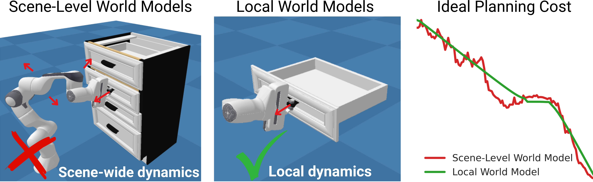
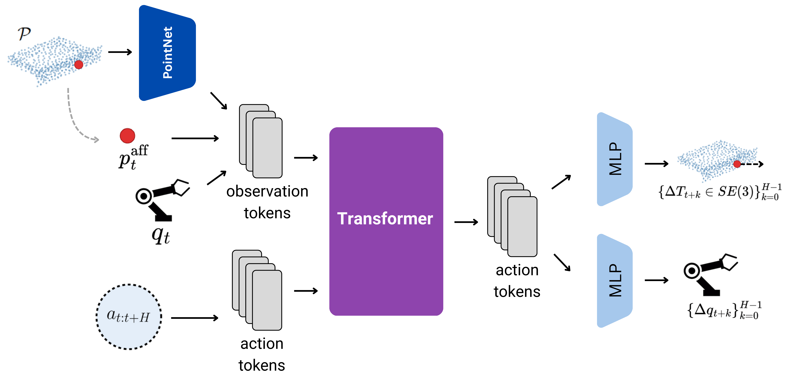
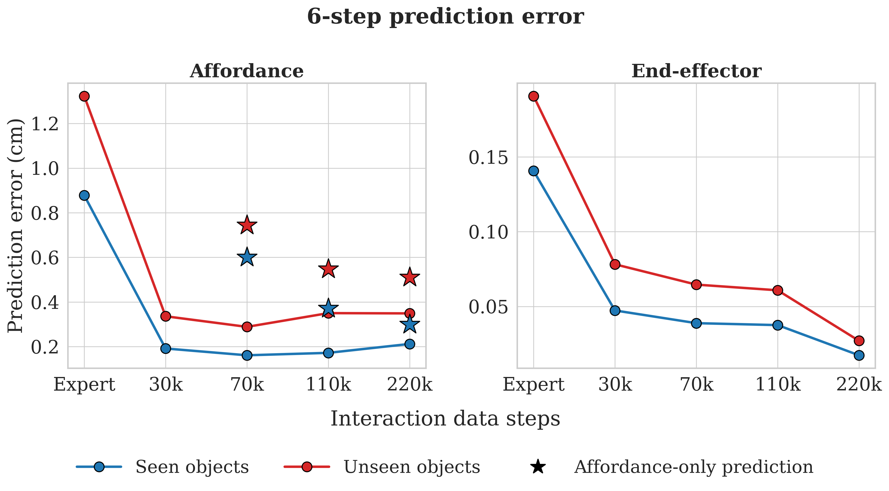
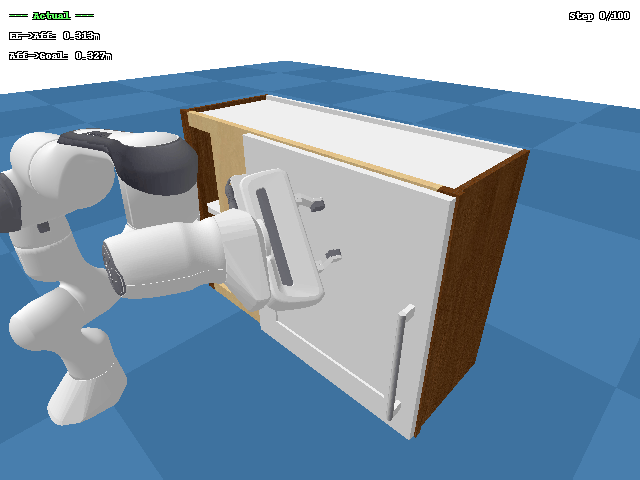

Introduction
General purpose robots operating in domestic and industrial environments often need to interact with articulated objects, such as opening cabinet doors and drawers, opening appliance doors such as ovens, and handling hinged or sliding components on machinery. Articulated objects are rigid body assemblies composed of multiple parts connected by joints that restrict their relative motion. These objects introduce two core challenges. First, the robot must produce motions consistent with the permitted degrees of freedom. Second, it must generalize across the substantial variation in geometry, appearance, and joint configuration that articulated objects exhibit, even within a single object category.
World models that predict how the environment evolves under an agent's actions offer a principled approach. Rather than mapping observations directly to actions, a world model learns action-conditioned dynamics from interaction data, which enables planning via Model Predictive Control (MPC). Because the agent optimises actions at test time toward a specified goal, task solving is decoupled from demonstration data. This enables zero-shot manipulation of objects for which no demonstrations exist.
Existing world models typically operate at the scene level, encoding observations into scene-wide representations. For articulated object manipulation, this design introduces a fundamental mismatch. The dynamics of articulated manipulation are low-dimensional. Contact at a small number of locations (e.g. a handle or edge) induces rigid-body motion constrained to few degrees of freedom by the object's joint. The task-relevant quantities, namely the pose and motion of a single rigid part, represent only a small fraction of the full scene. Because in MPC the planning cost must be defined over the quantities the world model predicts, a scene-level model computes cost over the entire observation space. For sampling-based MPC to efficiently discover good actions, this cost must decrease approximately monotonically with task progress. Scene-level costs fail this requirement, as illustrated below.

Motivated by these observations, we propose a local, affordance-centric world model for articulated object manipulation. Rather than modelling the full scene, we exploit the structured nature of the task. Articulated manipulation reduces to an end-effector contacting a specific surface location and inducing rigid-body motion along a joint. The world model therefore operates exclusively on the isolated moving part and a single 3D point on its surface marking the intended contact location, which we term the affordance point (e.g. a handle tip or drawer edge). The affordance point serves as the unifying abstraction of the framework. It specifies where the robot should act, the surrounding part geometry informs how the part can move, and the task goal is naturally expressed as a target location for the affordance point. Representation, prediction, and planning objective thus all reside in the same low-dimensional, geometrically interpretable space.
| Scene-level WM | Local WM | |
|---|---|---|
| Action-conditioned dynamics | ✓ | ✓ |
| Irrelevant dynamics removed by construction | ✗ | ✓ |
| Compact goal specification | ✗ | ✓ |
| Planning cost reflects task progress | ✗ | ✓ |
This formulation yields a direct, geometrically interpretable cost for MPC. The cost combines two terms: an engagement term that brings the end-effector to the affordance point, and a task-progress term measuring the Euclidean distance between the predicted and desired affordance-point location. Because successful manipulation moves the affordance point continuously toward the goal, the task-progress cost decreases monotonically with task progress by construction, providing an effective gradient for sampling-based optimisation. We evaluate across three task types and 16 object instances in simulation, half held out during training. With simple inductive biases that prevent spurious part motion away from contact, MPC solves tasks on both seen and unseen objects without demonstrations, achieving roughly 50% success on unseen objects.
Local World Model
This section describes the architecture and training of the local world model (LWM), which implements the affordance-centric dynamics model introduced above. The architecture is joint-type agnostic, designed to handle revolute and prismatic joints without explicit joint-type classification or axis estimation.

At each time step, the agent receives an observation consisting of (i) a part point cloud, a complete 3D surface reconstruction of the moving part (e.g. a drawer front and its handle), (ii) the current affordance point, a single point on the part surface marking the contact site (e.g. a handle tip), and (iii) the proprioceptive state, comprising the end-effector position, orientation, and gripper opening. Given the current observation and a sequence of candidate actions, the dynamics model predicts, for each step, a rigid-body transformation and a proprioceptive update over a 6-step horizon. The transformation is applied to the part point cloud and affordance point to obtain their next positions. Each predicted step yields a full observation, so a single call produces the predicted trajectory.
All models are Transformers with a prefix-LM attention mask, trained on expert demonstrations from seen objects (50k steps) combined with varying amounts of interaction data. The interaction dataset is collected by rolling out a diffusion policy from checkpoints saved at different stages of training. Early checkpoints exhibit common failure modes (missed grasps, slips, misalignment) while later ones approximate expert behaviour, together spanning a wide range of interaction outcomes.
Model-Predictive Planning
The LWM serves as the dynamics model for receding-horizon model-predictive control (MPC). At each environment step the planner samples candidate action sequences and evaluates them by rolling them out through the learned dynamics. The cost function has two terms: an engagement term that encourages the end-effector to approach the affordance point, and a task-progress term that rewards moving the affordance point toward the goal. Only the first action of the lowest-cost sequence is executed, after which the agent observes the true next state and re-plans. Prediction accuracy alone does not guarantee that the LWM is useful for control. A model may track ground-truth trajectories closely yet fail when an optimiser queries it in regions the training data never covered. Planning is therefore a stricter test, requiring the world model to produce predictions accurate enough for an optimiser to discover manipulation strategies from scratch.
We minimise the cost using iCEM (improved Cross-Entropy Method). Without additional constraints, MPC achieves near-zero success. The arm moves away from the handle with the gripper open. The LWM hallucinates large affordance displacements toward the goal for out-of-distribution state-action combinations, and the planner exploits these errors. Two simple inductive biases address this.
- Contact bias. A heuristic constraint that suppresses predicted part motion when the gripper is not near the part surface, preventing phantom movements from being rewarded. Since these hallucinations prevent the gripper from making contact in most episodes, this constraint is essential.
- Kinematics bias. The LWM's agent-state predictions accumulate error over multi-step rollouts, causing the imagined end-effector trajectory to drift from the physically realisable one. Since the robot's kinematic model is known, we replace the predicted proprioceptive delta with the forward-kinematics result computed from the commanded action.
Architecture & Data Scaling
Before deploying the LWM for planning, we investigate how prediction accuracy responds to model capacity and training data composition. We evaluate four architectures of increasing capacity (26M, 103M, 204M, and 412M parameters). The LWM jointly predicts two quantities over a 6-step horizon, affordance point displacement (how the contacted part moves) and end-effector state (where the arm ends up). These are qualitatively different prediction problems, and the two targets respond to capacity in qualitatively different ways.

On the affordance target, increasing capacity monotonically reduces error on seen objects. On unseen objects, however, the trend reverses beyond 103M. Larger models overfit to training-object geometries and unseen error rises. Beyond this point, additional capacity enables memorisation of instance-specific contact patterns rather than transferable dynamics. On the end-effector target, the smaller models (26M, 103M) show lower prediction error, while the larger models (204M, 412M) show increased error on both seen and unseen objects. End-effector motion is the simpler of the two prediction problems, so overfitting sets in at a smaller model scale.

Training on expert data alone yields high error for both targets, confirming that successful demonstrations provide insufficient coverage for learning general dynamics. Adding interaction data substantially reduces affordance error and narrows the seen-unseen gap, confirming that data diversity, not just data volume, is the key driver of transfer. End-effector error decreases monotonically through 220k steps, with the seen-unseen gap narrowing steadily. An affordance-only ablation (star markers) performs worse at all data scales, indicating that end-effector prediction serves as a powerful auxiliary signal that forces the shared Transformer backbone to encode the spatial relationship between arm and part.
Results
We now evaluate the full planning pipeline on the three manipulation tasks, progressively enabling inductive biases. The base model is the 204M-parameter LWM (LWM-200M), trained on expert and interaction data. We also evaluate LWM-100M (103M parameters), which achieved the lowest unseen-object affordance error. SR@0.8 measures full task completion.
| Model | Contact | Kinematics | SR@0.8 Seen | SR@0.8 Unseen |
|---|---|---|---|---|
| LWM-200M | 2.7% | 1.0% | ||
| LWM-200M | ✓ | 36.5% | 33.2% | |
| LWM-200M | ✓ | ✓ | 45.2% | 44.6% |
| LWM-100M | ✓ | ✓ | 51.2% | 49.6% |
With the contact bias alone, the planner successfully solves tasks, confirming that the LWM has learned dynamics accurate enough for zero-shot task solving. Applying the forward-kinematics bias yields a further improvement, and the seen-unseen gap narrows from 3.3 to 0.6 percentage points, confirming that agent-state prediction errors were a meaningful bottleneck.
With forward kinematics handling agent-state prediction, the selection criterion shifts to affordance accuracy. Evaluating LWM-100M with both biases yields a further 6 percentage point improvement. The planner reliably discovers viable approach and contact strategies. Prediction accuracy improvements thus transfer directly to planning performance.
Qualitative Effect of Inductive Biases
The following examples show the same object and goal under each bias configuration, making the failure mode of each ablation concrete.

No bias
Hallucinated progress

+ Contact
Genuine contact

+ Contact + Kinematics
Task completed
Without any bias, the gripper moves away from the part while the model hallucinates affordance progress. The planner rewards these phantom trajectories. The contact bias forces the planner to make actual contact before any part motion is credited, enabling genuine grasping behaviour. Forward kinematics then corrects end-effector drift over the planning horizon, allowing the planner to execute the grasp more precisely and complete the task.
Zero-Shot MPC Planning Examples
The world model is trained exclusively on 8 seen objects. The examples below show MPC discovering manipulation strategies from scratch on both seen and unseen instances, planned entirely through the learned dynamics without any demonstrations.

Object 45526

Object 45443

Object 46092

Object 46417

Object 44853

Object 45290
Conclusion
We proposed a local, affordance-centric world model for articulated object manipulation. By restricting the world model to the isolated moving part and a single contact point, the framework yields a geometrically interpretable planning cost that decreases monotonically with task progress. With two simple inductive biases, the planner reaches roughly 50% success on unseen objects, with the seen-unseen gap narrowing to 1-2 percentage points. Dynamics learned from just eight training objects transfer effectively across instances.
Future work includes evaluating on a broader range of articulated objects beyond cabinet furniture, pairing the framework with learned part segmentation and affordance discovery for deployment on physical hardware, and investigating online bootstrapping loops where MPC-collected interactions are used to iteratively retrain the world model.